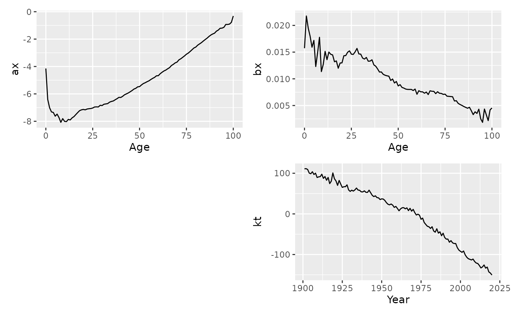

Lee-Carter model of mortality or fertility rates.
LC() returns a Lee-Carter model applied to the formula's response
variable as a function of age. This produces a standard Lee-Carter model by
default, although many other options are available. Missing rates are set to
the geometric mean rate for the relevant age.
Arguments
- formula
Model specification. It should include the log of the variable to be modelled. See the examples.
- adjust
method to use for adjustment of coefficients \(k_t\). Possibilities are
"dt"(Lee-Carter method, the default),"dxt"(BMS method),"e0"(Lee-Miller method based on life expectancy) and"none".- jump_choice
Method used for computation of jump-off point for forecasts. Possibilities:
"actual"(use actual rates from final year) and"fit"(use fitted rates). The original Lee-Carter method used"fit"(the default), but Lee and Miller (2001) and most other authors prefer"actual".- scale
If TRUE,
bxandktare rescaled so thatkthas drift parameter = 1.- ...
Not used.
References
Basellini, U, Camarda, C G, and Booth, H (2022) Thirty years on: A review of the Lee-Carter method for forecasting mortality. International Journal of Forecasting, 39(3), 1033-1049.
Booth, H., Maindonald, J., and Smith, L. (2002) Applying Lee-Carter under conditions of variable mortality decline. Population Studies, 56, 325-336.
Lee, R D, and Carter, L R (1992) Modeling and forecasting US mortality. Journal of the American Statistical Association, 87, 659-671.
Lee R D, and Miller T (2001). Evaluating the performance of the Lee-Carter method for forecasting mortality. Demography, 38(4), 537–549.
Examples
lc <- aus_mortality |>
dplyr::filter(State == "Victoria", Sex == "female") |>
model(lee_carter = LC(log(Mortality)))
report(lc)
#> Series: Mortality
#> Model: LC
#> Transformation: log(Mortality)
#>
#> Options:
#> Adjust method: dt
#> Jump choice: fit
#>
#> Age functions
#> # A tibble: 101 × 3
#> Age ax bx
#> <int> <dbl> <dbl>
#> 1 0 -4.15 0.0157
#> 2 1 -6.40 0.0218
#> 3 2 -7.01 0.0195
#> 4 3 -7.32 0.0180
#> 5 4 -7.36 0.0159
#> # ℹ 96 more rows
#>
#> Time coefficients
#> # A tsibble: 120 x 2 [1Y]
#> Year kt
#> <int> <dbl>
#> 1 1901 111.
#> 2 1902 111.
#> 3 1903 109.
#> 4 1904 100.
#> 5 1905 98.8
#> # ℹ 115 more rows
#>
#> Time series model: RW w/ drift
#>
#> Variance explained: 72.99%
autoplot(lc)
